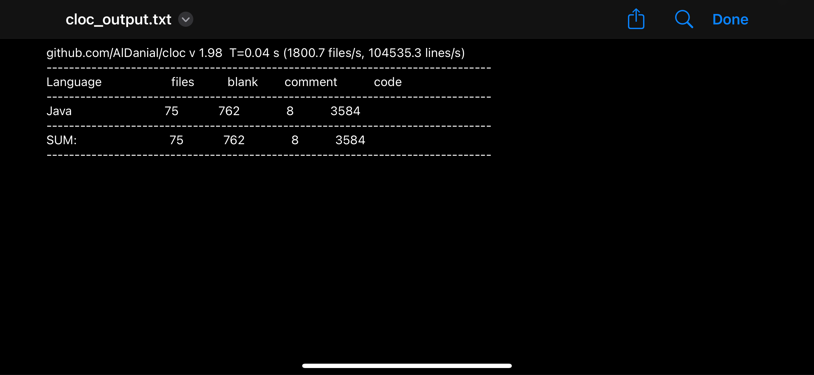
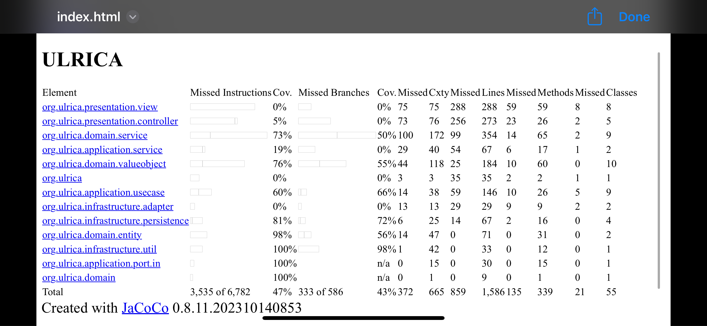

Programmentwurf - Protokoll
zu
Robin Schwenzfeier
-
4868455
-
TINF21CS1
Kapitel 1: Einleitung (4P)
Inhalt des Kapitels
1. Übersicht über die Applikation (1P)
- Name und Bedeutung
- Features und Funktionen
- Probleme, die sie löst
2. Starten der Applikation (1P)
- Voraussetzungen
- Schritte zum Starten
- Alternative zum Starten
3. Technischer Überblick (2P)
- Java (JDK 17)
- Maven
- JSON & GSON
- JUnit & JaCoCo
- Clean Architecture
Übersicht über die Applikation (1P)
Was macht die Applikation? Wie funktioniert sie? Welches Problem löst sie?
ULRICA: Name erklärt
Ein Acronym.
UniversaL Range and destInation CAlculator
Features der Applikation
Probleme, die sie löst.
- 1. Erstellt und verwaltet Fahrzeugprofile für Elektrofahrzeuge
- 2. Berechnet verbleibende Reichweite von Elektrofahrzeugen
- 3. + 4. Berechnet Ladezeiten an DC- und AC-Ladestationen
5. Berechnet und simmuliert eine Route
Features der Applikation
1. Fahrzeugprofil-Management
- Erstellung, Anzeige und Löschung von Fahrzeugprofilen
- Konfiguration von Batteriedaten (Typ, Kapazität, Degradation, etc.)
- Definition von Verbrauchsprofilen (bei 50km/h, 100km/h, 130km/h)
2. Reichweitenberechnung
- Strategie-Pattern für verschiedene Berechnungsmethoden
- WLTP-basierte Berechnung mit "echten" Bedingungen
- Temperatureinflüsse
- Geländebedingungen
- etc.
Features der Applikation
3. DC (Schnelles) Laden
- SoC-basierte Berechnungen
- Temperatureinflüsse beim Laden
- Leistungsreduktion basierend auf Batteriezustand
- Detaillierte Ladezeitschätzungen
- Berücksichtigung von Batterie-Typ
4. AC (Langsames) Laden
- Verschiedene Anschlusstypen (Haushalt, Camping, Wallbox)
- Berechnung von Effizienzverlusten
- Temperatur-Effizenzfaktoren
- Ladezeitprognosen
Starten der Applikation (1P)
Was brauche ich? Wie startet man die Applikation?
Voraussetzungen:
- Java 17 oder höher
- Maven
- Git
Schritte zum Starten:
- Repository klonen: git clone https://github.com/mausio/ULRICA
- In Projektverzeichnis wechseln: cd /path/to/ULRICA
- Projekt kompilieren: mvn clean compile
- ULRICA starten: mvn exec:java -Dexec.mainClass="org.ulrica.App"
Alternative zum Starten:
- JAR-Datei erstellen: mvn clean package
- Dieser Befehl kompiliert den Code und erstellt eine ausführbare JAR-Datei im Verzeichnis target/
- Die JAR-Datei wird als ULRICA-1.0-SNAPSHOT.jar gespeichert
- JAR-Datei ausführen: java -jar
target/ULRICA-1.0-SNAPSHOT.jar
- Stellt sicher, dass Java 17 oder höher installiert ist
- Die JAR-Datei enthält alle notwendigen Abhängigkeiten
- Kann auf jedem System mit Java 17+ ausgeführt werden
Technischer Überblick (2P)
Welche Technologien? Welche Architektur?
Technologien: Überblick
- Java (JDK 17): Objektorientierte Programmiersprache
- Maven: Build-Management-Tool
- JSON/GSON: Datenaustauschformat und Java-Bibliothek für Persistenz
- JUnit 4: Test-Framework für automatisierten Tests
- JaCoCo: Code-Coverage-Tool
- Github Workflow:CI/CD Pipeline-Tool mit Maven Build
Java (JDK 17)
Vorteile:
- Plattformunabhängigkeit durch Java Virtual Machine
- Starke objektorientierte Programmierung
- Typ-Sicherheit bei Laufzeit
- LongTermSupport
- Umfangreiche Bibliotheken verfügbar -> GSON
- Ideale Grundlage für Clean Architecture und Implementierung von Prinzipien
Alternativen:
- Kotlin:
Eleganter, aber weniger etabliert (auch nicht erlaubt) - Python:
Einfacher, aber weniger performant und relativ unbekannt für mich - JavaScript:
Mir sehr bekannt, aber schwierig Architekturprinzipien zu implementieren (auch nicht erlaubt)
Maven
Vorteile
- "Plug&Play" für Nutzer:innen
- Konsistente Projektstruktur
- Automatisiertes Abhängigkeitsmanagement
- Standardisierte Build-Lebenszyklen
- Integration mit JUnit und JaCoCo
- Plugin-Ökosystem für erweiterte Funktionen
Konfiguration in ULRICA
<dependencies>
<dependency>
<groupId>junit</groupId>
<artifactId>junit</artifactId>
<version>4.13.2</version>
<scope>test</scope>
</dependency>
<dependency>
<groupId>com.google.code.gson</groupId>
<artifactId>gson</artifactId>
<version>2.10.1</version>
</dependency>
</dependencies>JSON & GSON
Vorteile
- Leichtgewichtiges Datenformat
- Für Menschen lesbar und einfach zu bearbeiten
- Ideal für Konfigurationsdaten, e.g. Fahrzeugprofile
- Weit verbreitet und unterstützt
- GSON bietet einfache Java-Integration
- TypeAdapter für komplexe Datentypen
Implementierung
public class JsonCarProfileRepository
implements CarProfilePersistencePortInterface { // Implementierung des Persistenz-Ports für Fahrzeugprofile
private final Gson gson; // Gson-Instanz für JSON-Serialisierung/Deserialisierung
private final Path filePath; // Pfad zur JSON-Datei
public JsonCarProfileRepository() {
this.gson = new GsonBuilder()
.setPrettyPrinting() // Formatiert die JSON-Ausgabe lesbar
.registerTypeAdapterFactory( // Ermöglicht die Serialisierung von Optional-Werten
new OptionalTypeAdapterFactory()) // Registriert eine Factory zur Unterstützung von "Optional"-Typen
.create(); // Factory: Entwurfsmuster (Design Pattern) für die Erstellung von bestimmten Objekten
this.filePath = Paths.get(
STORAGE_DIR, FILE_NAME); // Definiert den Speicherort der JSON-Datei
}
// ...
} Test-Framework: JUnit
Vorteile
- De-facto Standard für Java-Tests
- Umfangreiche Assertions-Bibliothek
- Integration mit Build-Tools und JaCoCo
- Test-getriebene Entwicklung (TDD) wird unterstützt
Code-Coverage: JaCoCo
Fokus auf qualitative Tests u. kritische Komponenten, statt bloßer Maximierung
Vorteile
- Detaillierte Abdeckungsmetriken
- Integration mit Maven und CI/CD
- Identifikation von ungetesteten Codebereichen
- Visualisierung der Testabdeckung
- Qualitätssicherung während der Entwicklung
- Motivation zur Erhöhung der Testabdeckung
Ergebnisse
- Gesamtabdeckung: 47%
- Domain Layer: 68%
- Application Layer: 53%
- Presentation Layer: 42%
- Infrastructure Layer: 36%
- Core-Komponenten: 75%
Github Workflow
Kontinuierliche Integration und automatische Qualitätssicherung
Vorteile
- Automatisierte Builds bei jedem Commit
- Kontinuierliche Ausführung der Tests
- Automatische Code-Coverage-Analyse
- Codequalitätsmessung mit CLOC
- E-Mail-Benachrichtigungen über Build-Status
- Früherkennung von Fehlern und Qualitätsproblemen
Implementierung
name: Java CI with Maven
on:
push:
branches: [ main ]
pull_request:
branches: [ main ]
jobs:
build:
runs-on: ubuntu-latest
steps:
- uses: actions/checkout@v3
- name: Set up JDK 17
uses: actions/setup-java@v3
with:
java-version: '17'
distribution: 'temurin'
- name: Build, test and check coverage
run: mvn -B verify
- name: Install CLOC
run: sudo apt-get install -y cloc
- name: Count Java lines of code
run: cloc --include-lang=Java ./src/main/java/org/ulrica
# E-Mail-Benachrichtigung über Ergebnisse
- name: Send Email with Results
uses: dawidd6/action-send-mail@v3
# ...Kleines Add-On: Mails


